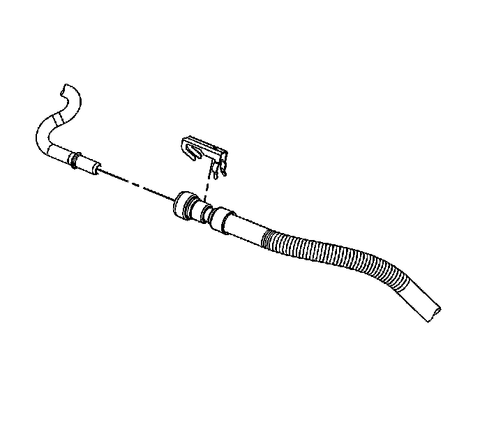
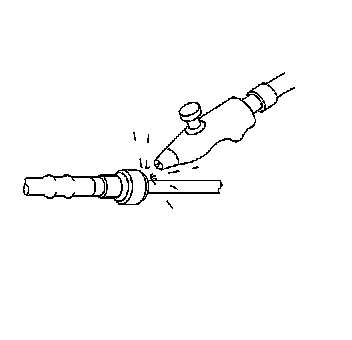
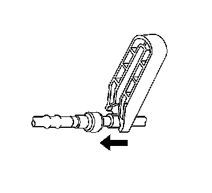
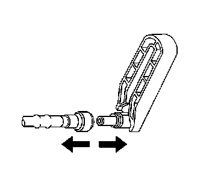
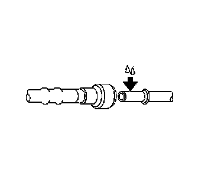
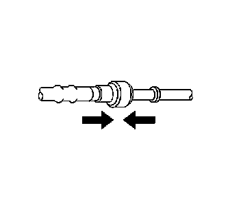
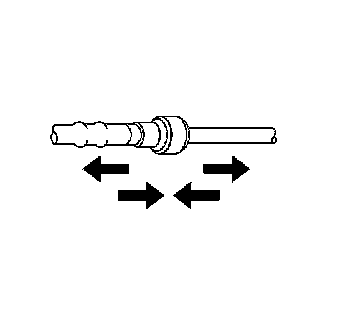

Metal Collar Quick Connect Fitting Service
METAL COLLAR QUICK CONNECT FITTING SERVICE
Tool Required
J 41769 Fuel Line Quick Disconnect Tool
DISCONNECT PROCEDURE

1. Relieve the fuel system pressure. Refer to Fuel Pressure Relief.
2. Remove the fuel line retainer.
3. CAUTION: Wear safety glasses when using compressed air, as flying dirt particles may cause eye injury.

Using compressed air, blow any dirt or debris from around the connection.

4. Using the correct tool from the J 41769, insert the tool into the female connector end, then push inward in order to release the quick connect locking tabs.

5. Pull the fuel line connection apart.
6. NOTE: If necessary, remove rust or burrs from the fuel pipes with an emery cloth. Use a radial motion with the fuel pipe end in order to prevent damage to the O-ring sealing surface. Use a clean shop towel in order to wipe off the male tube ends. Inspect all the connections for dirt and burrs. Clean or replace the components and assemblies as required.
Use a clean shop towel in order to wipe off the male connection end.
7. Inspect both ends of the fitting for dirt and burrs. Clean or replace the components as required.
CONNECT PROCEDURE
1. CAUTION:
- In order to reduce the risk of fire and personal injury, before connecting fuel pipe fittings, always apply a few drops of clean engine oil to the male pipe ends.
- This will ensure proper reconnection and prevent a possible fuel leak.
- During normal operation, the O-rings located in the female connector will swell and may prevent proper reconnection if not lubricated.

Apply a few drops of clean engine oil to the male connection end.

2. Push both sides of the fitting together in order to engage the retaining tabs.

3. Once installed, pull on both sides of the connection in order to ensure the connection is secure.
4. Install the fuel line retainer.